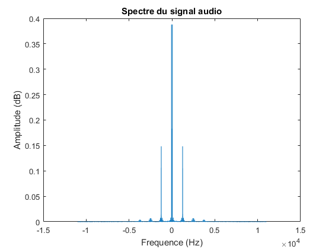
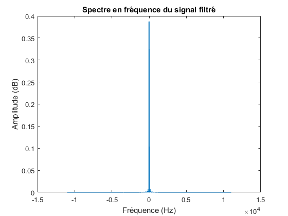
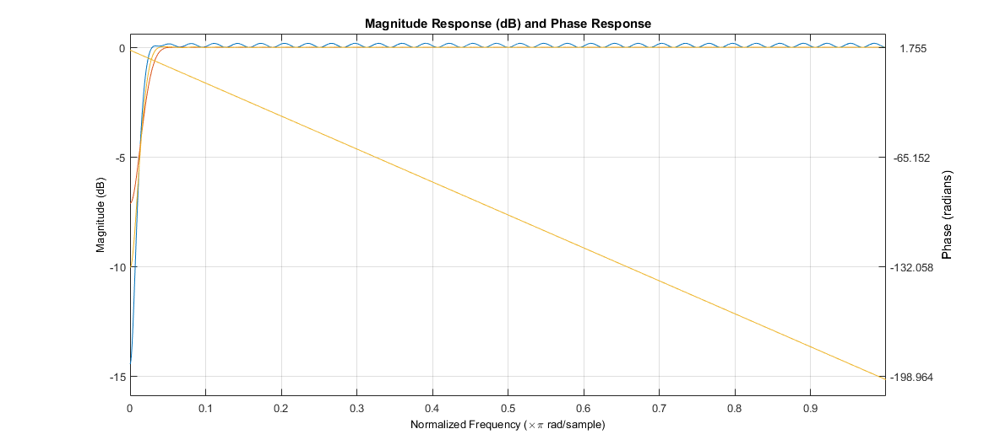
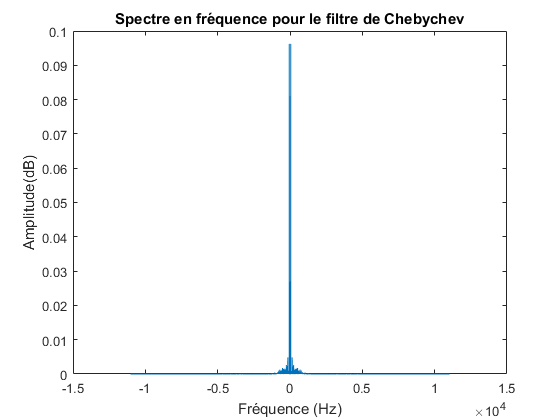
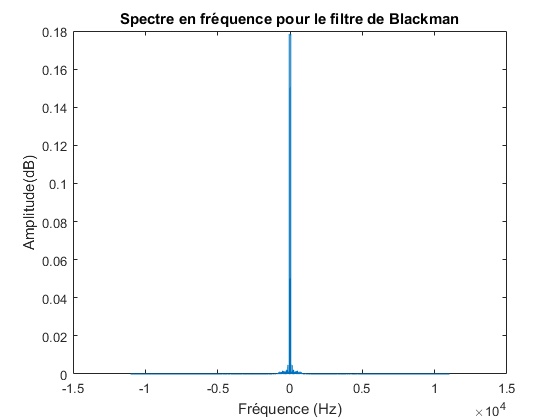
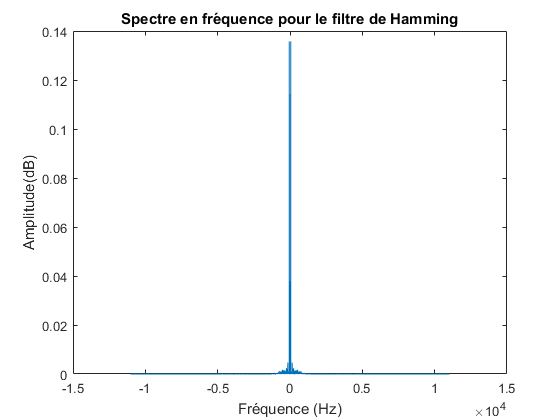

Exercice 4 : Signal audio
Contents
Question 1
[Data, Fe] = audioread('audio.wav');
Il y a une perturbation sur toute la longueur du morceau, haute fréquence. Il y a un vrombissement en basse fréquence.
Question 2
tf = fftshift(fft(Data)); dt = 1/Fe; N = size(Data,1); dF = Fe/N; f = -Fe/2:dF:Fe/2-dF; figure; plot(f,abs(tf)/N); xlabel("Frequence (Hz)"); ylabel("Amplitude (dB)"); title("Spectre du signal audio");
On distingue deux mi bémol (a 1245Hz et 2489Hz) et un si bémol (a 3734Hz, ce qui est légerement supérieur a la valeur théorique).
Question 4
Génération d'un filtre passe-bas de fréquence de coupure 1800Hz (suffisant pour éliminer la perturbation aigüe) :
lp_filter = fir1(128, 1800 / Fe, 'low'); data_lowpass = filter(lp_filter, 1, Data); figure; tf_lowpass = fftshift(fft(data_lowpass)); plot(f,abs(tf_lowpass)/N); title('Spectre en fréquence du signal filtré'); xlabel('Fréquence (Hz)'); ylabel('Amplitude (dB)'); audiowrite('melodie_lowpass.wav', data_lowpass, Fe);
Nous avons bien filtré la perturbation en mi bemol, cependant une grosse partie de la mélodie a également disparu (notamment les percussions). La solution serait de réaliser un filtre coupe-bande dont la bande bloquante est centrée sur la perturbation, et suffisamment resserée pour ne pas perdre trop d'information sur la mélodie.
Question 5
Filtre de Chebychev :
hp_filter_cheby = fir1(128, 250 / Fe, 'high', chebwin(129, 30));
Filtre de Blackman :
hp_filter_blackman = fir1(128, 250 / Fe, 'high', blackman(129));
Filtre de Hamming :
hp_filter_hamming = fir1(128, 250 / Fe, 'high', hamming(129));
Question 6
figure; dis_cheby = dfilt.dffir(hp_filter_cheby); dis_blackman = dfilt.dffir(hp_filter_blackman); dis_hamming = dfilt.dffir(hp_filter_hamming); freqz([dis_cheby, dis_blackman, dis_hamming])
Question 7
Chebychev :
data_hp_cheby = filter(hp_filter_cheby, 1, data_lowpass);
audiowrite('melodie_hp_cheby.wav', data_hp_cheby, Fe);
Blackman :
data_hp_blackman = filter(hp_filter_blackman, 1, data_lowpass);
audiowrite('melodie_hp_blackman.wav', data_hp_blackman, Fe);
Hamming :
data_hp_hamming = filter(hp_filter_hamming, 1, data_lowpass);
audiowrite('melodie_hp_hamming.wav', data_hp_hamming, Fe);
On constate que le filtre de Blackman élimine mois bien le vrombissement dans les basses fréquences. Nous n'avons pas remarqué de différence notable entre les filtres de Chebychev et Hamming. Pour le filtre passe-haut, il faut faire un compromis entre la réduction du vrombissement et la conservation des basses fréquences présentes dans la musique originale.
Question 8
Chebychev :
figure; tf_hp_cheby = fftshift(fft(data_hp_cheby)); plot(f,abs(tf_hp_cheby)/N); title('Spectre en fréquence pour le filtre de Chebychev'); xlabel('Fréquence (Hz)'); ylabel('Amplitude(dB)');
Blackman :
figure; tf_hp_blackman = fftshift(fft(data_hp_blackman)); plot(f,abs(tf_hp_blackman)/N); title('Spectre en fréquence pour le filtre de Blackman'); xlabel('Fréquence (Hz)'); ylabel('Amplitude(dB)');
Hamming :
figure; tf_hp_hamming = fftshift(fft(data_hp_hamming)); plot(f,abs(tf_hp_hamming)/N); title('Spectre en fréquence pour le filtre de Hamming'); xlabel('Fréquence (Hz)'); ylabel('Amplitude(dB)');
On constate que le filtre avec une fenêtre de Chebychev présente des oscillations au-dela de la fréquence de coupure. Les deux autres filtres n'en présentent pas, cependant on constate que la fenêtre de Hamming permet d'obtenir une zone atténuée plus étroite (ce qui explique le vombrissement mieux atténué avec Hamming qu'avec Blackman).